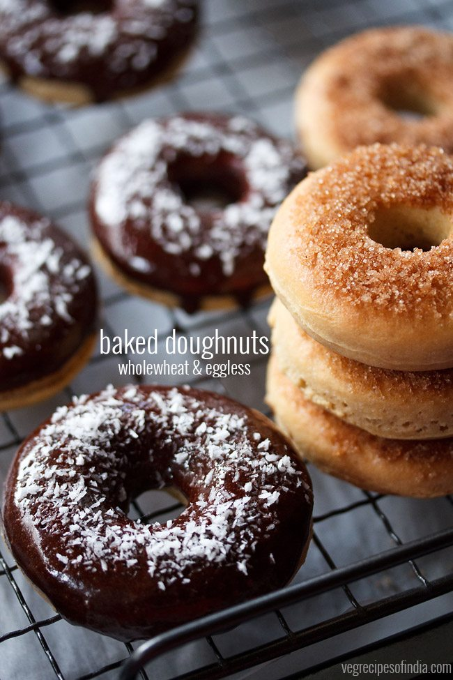

***Receipe of a Eggless Donut***

Ingridients We Need To Cake Receipe:-
▢2 cups whole wheat flour (atta), levelled or 250 grams whole wheat flour
▢½ teaspoon instant yeast or ¾ teaspoon active dry yeast or 1.5 teaspoon fresh yeast
▢¼ cup sugar, levelled or 36 grams sugar
▢¾ cup milk or add as required
▢3 tablespoons butter or oil
▢1 pinch of grated nutmeg or nutmeg powder (jaiphal powder) - optional
▢1 teaspoon vanilla extract or ½ teaspoon vanilla essence
▢2 tablespoons cocoa powder
▢3 tablespoons powdered sugar or icing sugar
▢4 tablespoons milk or add as required
▢¼ teaspoon vanilla extract or a drop of vanilla essence
▢some desiccated coconut for sprinkling - optional
Preparing For The Donut:-
1 First warm ½ cup milk and take it in a mixing bowl or pan. Do note that the milk should be warm and not hot.
2 Then add ¼ cup sugar and ½ teaspoon instant yeast. mix very well.
3 Next add 1 cup whole wheat flour (atta).
4 Mix very well with a spoon. Cover the pan with a lid or kitchen towel and allow to leaven for 20 to 30 minutes.
5 After leavening, you will see that the dough mixture has become stringy and has air pockets in it.
6 Then add the remaining 1 cup of whole wheat flour, 3 tablespoons butter, 1 teaspoon vanilla extract and a pinch of grated nutmeg.
7 Mix first and then begin to knead the dough. Add ¼ cup more of the milk (milk can be warm or at room temperature). Add milk as required while kneading.
8 Knead to a smooth, soft and supple dough. The dough should be softer than a chapati dough. If dough feels hard then add more milk. When you add more milk, it looks like the dough has become sticky and is covered with milk, but continue to knead and the dough will absorb the remaining milk.
9 Do note that the dough has to be soft and supple. If the dough is not soft, then the doughnuts will also not have a soft texture. Overall I used ¾ cup milk. Depending on the quality of flour, you can add ¾ to 1 cup milk or more if required.
10 Cover the bowl and keep the dough to leaven for 45 minutes to 1 hour. The dough will double.
11 If using dry active yeast or fresh yeast, then keep for 1:30 minutes to 3 hours. Timing will vary depending on the temperature conditions. Warmer temperatures are more conducive for leavening and fermentation.
12 While donut dough is getting leavened, we can prepare the glaze.
Making Of The Donut:-
Line a tray with parchment paper or butter paper. Alternatively you can grease the tray very well with oil or butter.
Gently and lightly knead the dough once more. Then sprinkle some flour and roll the entire dough to a circle having ½ to ¾ inch width.
Keep and press the doughnut cutter on the dough. Do this on all the rolled dough.
If you do not have a dough nut cutter, then take a lid and press it on the dough. Then take a small lid and keep in the centre of the cut round dough. Remove the small centre piece and you get the doughnut shape.
Remove gently and keep the doughnuts on the lined tray. Also keep the small centre pieces.
Gather the remaining dough and bring it together. Roll and again cut the dough. Make doughnuts this way with all of the dough
Cover and allow for the second rise for 15 to 20 minutes. With dry active or fresh yeast, keep for 30 minutes to 45 minutes.
Before baking doughnuts, preheat the oven with both top and bottom heating elements on at 180 degrees celsius. Keep the tray in the centre. Bake doughnuts for 15 to 25 minutes. Timing will vary depending on the oven size, make and actual temperature in the oven. Bake till the tops are golden. also do not over bake doughnuts or else the texture becomes dry.
Remove the donuts and keep on wired rack. If some donuts have got baked and some are still not, then remove the ones which are baked and keep on a wired rack. This what I did for some of the donuts which had got baked faster.
No need to warm or cool the donuts. Proceed to the next step of glazing.
Melt 2 tablespoons butter in a steel bowl or a steel plate by keeping it on a low flame on the stove top. Do not touch the plate or bowl as it will be hot.
Place the doughnut upside down in the melted butter.
Remove and keep doughnut on the wired rack.
For the chocolate glaze, place the doughnut upside down in the glaze.
Remove and keep the doughnuts on wired rack.
I also sprinkled some desiccated coconut on a few chocolate donuts. Optional step.
Serve doughnuts warm or at room temperature. Leftovers can be refrigerated. They will become dense once refrigerated. So while serving, you can warm doughnuts in an oven or microwave oven or let them come to room temperature.